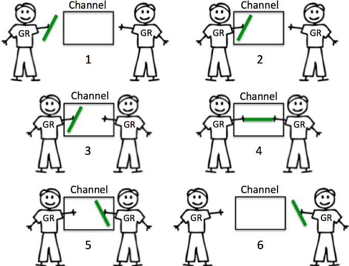
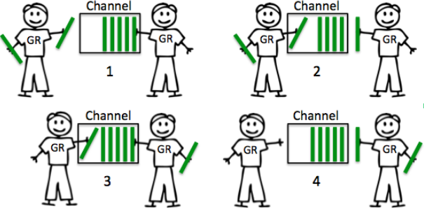

Channel
Channel是Go内置的数据类型，用于两个不同的Goroutine之间传递数据，是一种类型安全的消息队列。
Channel分类
根据是否有缓冲区可将channel分为两种: 无缓冲Channel和带缓冲Channel。
无缓冲的Channel
创建一个无缓冲区的Channel
unbuffer := make(chan struct{})无缓冲的channel没有容量，所以两个Goroutine在使用无缓冲channel进行消息传递是，通信双方必须同时准备好。如下图所示

无缓冲的channel本质是保证通信同步。
例子：
package main import ( "time" "sync" ) func main() { // 创建一个个无缓冲channle unbufferchannel := make(chan string) var wg sync.WaitGroup wg.Add(1) go func() { defer wg.Done() unbufferchannel<-"hello" }() go func() { defer wg.Done() println("Message: " + <-unbufferchannel) }() wg.Wait() }
带缓冲的Channel
创建一个带缓冲的channel
bufferchannel := make(chan string, 2)带缓冲的channel是一种在被接收前能存储一个或者多个值的通道。这种类型的channel并不强制要求goroutine之间必须同时完成发送和接收。如下图所示

Channel使用场景
channel一般的使用场景是用于耗时工作，类似生产这-消费者模式
Channel小总结
- 无缓冲的channel接收者先于发送者发生。
- 无缓冲可以保证100%接收者能接收到。
- 无缓冲channel时间延迟是未知的。
- 有缓冲的channel发送者是先发生与接收者的。
- 有缓冲的channel时间延迟小，不保证数据是否可到达，越大的buffer，越小的保障。buffer为1时，给你延迟一个消息的保障。
that's all